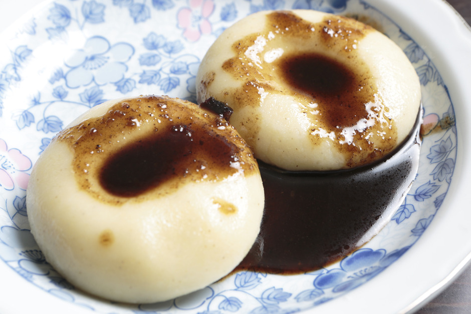

Ingredients:
- Proso millet (mochi type)
- Joshinko rice flour
- Lukewarm water
- Green onion
- Hot water
───── index ─────
Yuk Ohaw
Home
Citatap
Kombu Sito
How to make it:
- Wash the proso millet in running water, then soak it in lukewarm water for 7-8 minutes.
- Spread the proso millet out on paper towels and dry for about 10 minutes, or until there is just a
little moisture left.
- Grind the millet into fine powder with an electric grinder, then sift it with a strainer.
- Put the millet powder and the joshinko rice flour into a bowl and mix them, then add lukewarm water
a little at a time
and knead until it is the consistency of an earlobe.
- When the dough is ready, make flat dumplings about 7 cm. in diameter and make a depression in the
center of each with
your finger.
- Boil water and place the dumplings in it, then mix them once with a spatula as if scooping them up
so they do not stick
to the bottom of the pot.
- Lower the flame. When the dumplings float, transfer them into a bowl of cold water.
- Wash the dumplings in running water to make them springy, and you are done.
Source:
An American Ainu in
Diaspora